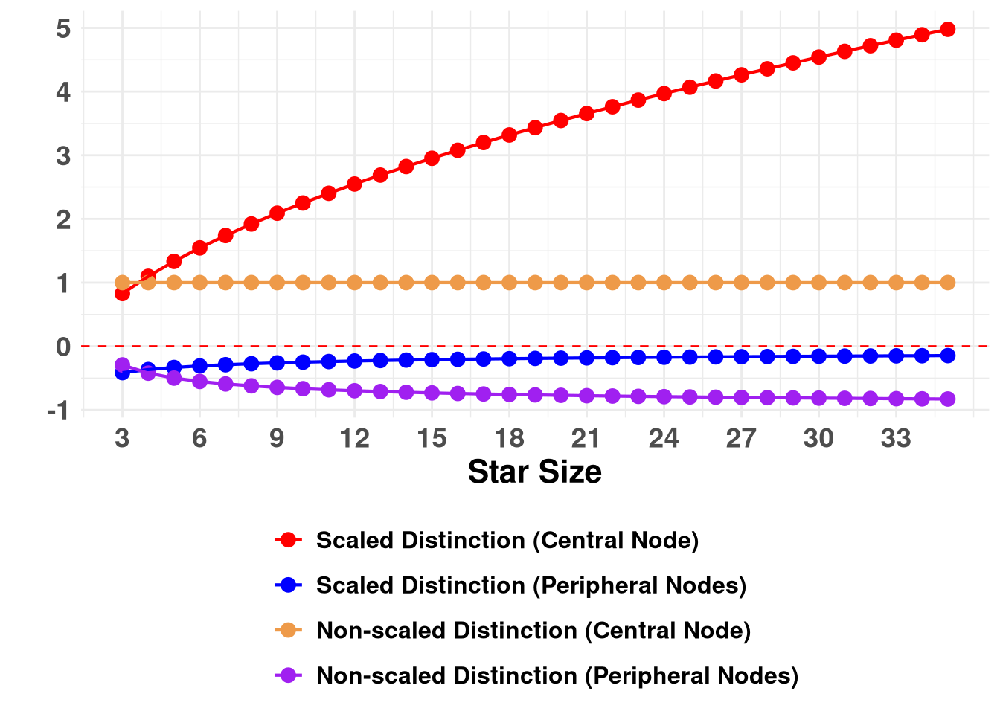
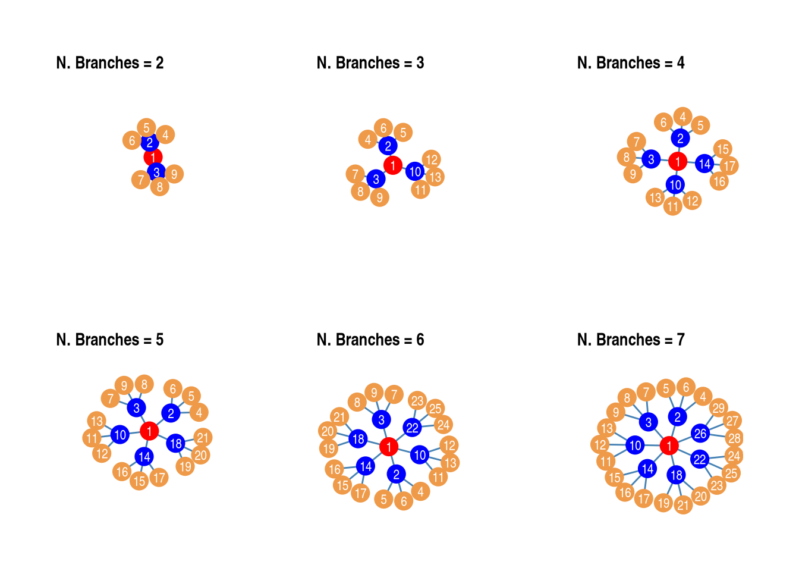
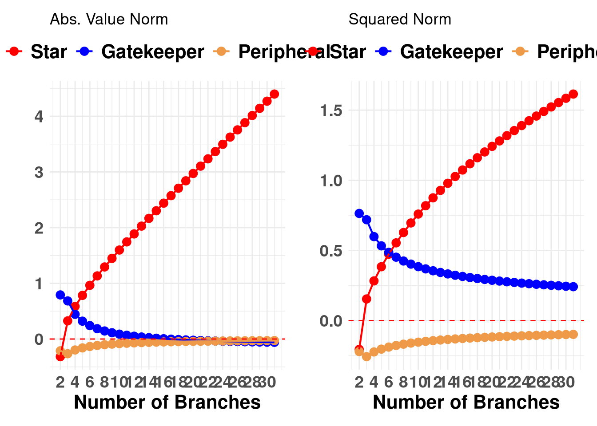
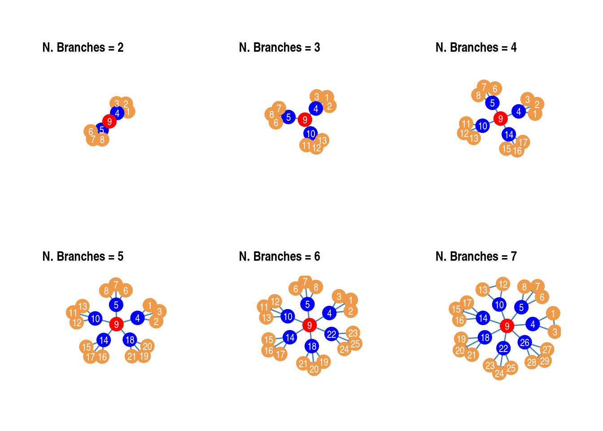
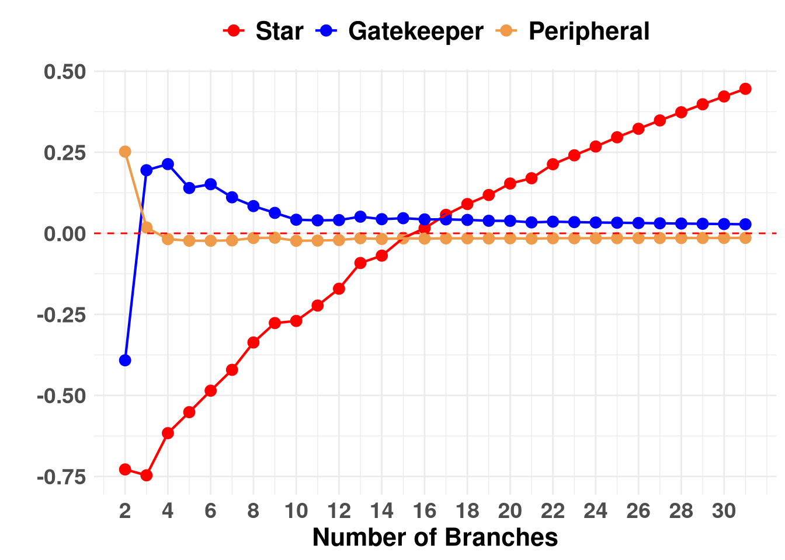

png
2 png
2 png
2 png
2 png
2 png
2 png
2 png
2 n d scd s u scalar
1 1 -0.2155 -0.1746 0.0931 0.3086 1.4393
2 2 -0.2155 -0.1746 0.0931 0.3086 1.4393
3 3 -0.2155 -0.1746 0.0931 0.3086 1.4393
4 4 -0.2155 -0.1746 0.0931 0.3086 1.4393
5 5 0.1818 0.3326 0.3430 0.1612 1.4393
6 6 0.0934 0.4819 0.8841 0.7906 1.4393
7 7 -0.0459 0.1967 0.5522 0.5980 1.4393
8 8 0.5239 0.9633 1.0000 0.4761 1.4393
9 9 0.2797 0.6712 0.8911 0.6114 1.4393
10 10 0.1382 0.4955 0.8133 0.6751 1.4393
11 11 -0.7285 -0.6093 0.2715 1.0000 1.4393
12 12 -0.7285 -0.6093 0.2715 1.0000 1.4393
13 13 0.0000 0.0000 0.0000 0.0000 1.4393
14 14 -0.5891 -0.4828 0.2419 0.8310 1.4393
15 15 -0.5403 -0.4433 0.2208 0.7611 1.4393
16 16 -0.3640 -0.2981 0.1499 0.5139 1.4393






n d scd s u scalar
1 1 0.6560 1.6494 0.9066 0.2505 2.0958
2 2 0.3623 0.9183 0.5074 0.1452 2.0958
3 3 0.5305 1.3214 0.7217 0.1912 2.0958
4 4 0.0776 0.4281 0.3199 0.2424 2.0958
5 5 -0.2380 -0.1926 0.0414 0.2794 2.0958
6 6 -0.1620 -0.1123 0.0453 0.2073 2.0958
7 7 -0.1620 -0.1123 0.0453 0.2073 2.0958
8 8 -0.1787 0.0510 0.2097 0.3884 2.0958
9 9 -0.3187 0.0878 0.3710 0.6896 2.0958
10 10 -0.7748 -0.6919 0.0756 0.8504 2.0958
11 11 -0.2380 -0.1926 0.0414 0.2794 2.0958
12 12 -0.8218 -0.7998 0.0200 0.8418 2.0958
13 13 -0.4675 -0.4117 0.0509 0.5185 2.0958
14 14 -0.1650 0.2381 0.3679 0.5330 2.0958
15 15 -0.6870 -0.6061 0.0738 0.7607 2.0958
16 16 -0.6870 -0.6061 0.0738 0.7607 2.0958
17 17 -0.0361 -0.0317 0.0040 0.0401 2.0958
18 18 -0.5291 -0.4620 0.0612 0.5904 2.0958
19 19 -0.6870 -0.6061 0.0738 0.7607 2.0958
20 20 -0.6012 -0.4292 0.1569 0.7581 2.0958
21 21 -0.6870 -0.6061 0.0738 0.7607 2.0958
22 22 -0.5291 -0.4620 0.0612 0.5904 2.0958
23 23 -0.6870 -0.6061 0.0738 0.7607 2.0958
24 24 -0.1251 0.0521 0.1617 0.2867 2.0958
25 25 -0.0995 -0.0739 0.0233 0.1229 2.0958
26 26 -0.1071 -0.0796 0.0251 0.1323 2.0958
27 27 -0.5001 -0.4552 0.0410 0.5411 2.0958
28 28 -0.3003 -0.1603 0.1278 0.4281 2.0958
29 29 -0.4966 -0.3615 0.1233 0.6199 2.0958
30 30 -0.2318 -0.0886 0.1307 0.3625 2.0958
31 31 -0.3163 -0.0762 0.2191 0.5353 2.0958
32 32 -0.1778 0.1091 0.2618 0.4396 2.0958
33 33 0.5738 1.3227 0.6834 0.1095 2.0958
34 34 0.9503 2.0461 1.0000 0.0497 2.0958